复指数的性质¶
约 2658 个字 23 张图片 预计阅读时间 9 分钟
复平面：¶
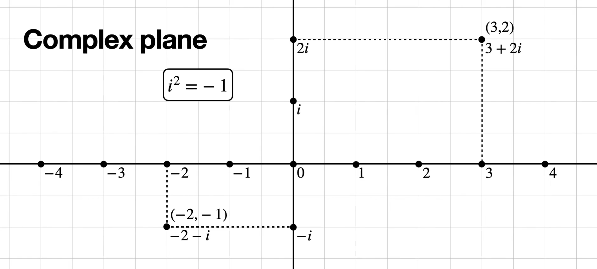
傅里叶变换，顺时针旋转， \(\frac{2\pi}{N}\)
逆傅里叶变换，逆时针旋转，也是\(\frac{2\pi}{N}\)，最后还要除以序列长度 \(N\)
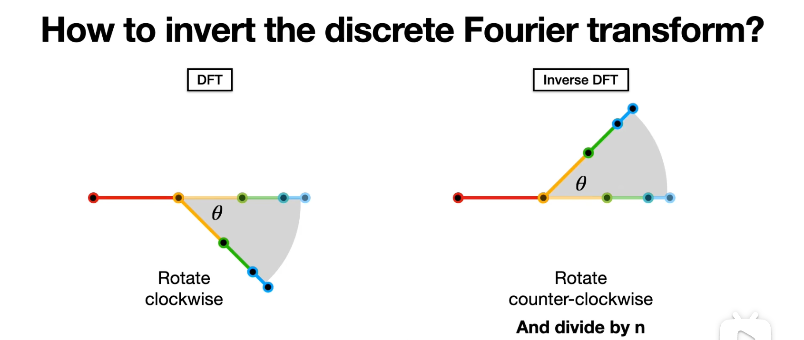
复平面与 \(e^x\) ，这一步的转换，其实是从 \((cos\theta,sin\theta)\) 直接用了 \(e^{i\theta}\) 表示
复指数表示复平面¶
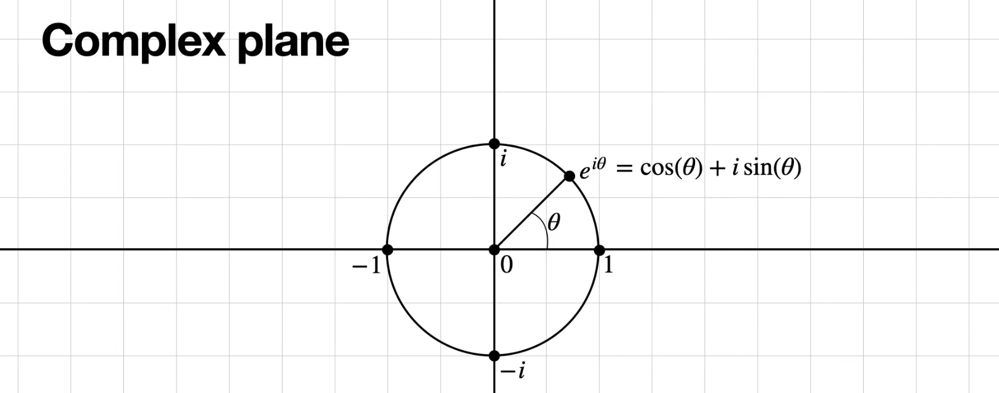
类似的，复平面坐标点，全部用指数表示
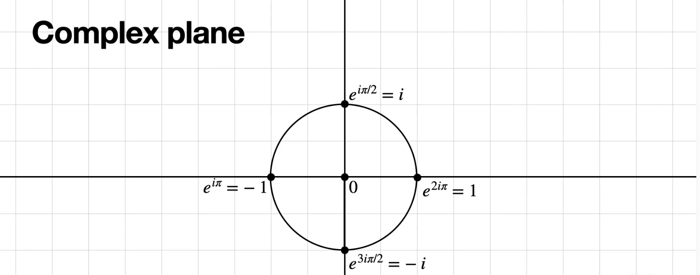 $$ e^{i\theta} = cos\theta + isin\theta $$ 具体来说：
规定 逆时针旋转为正方向。
也正是因为如此，傅里叶的复指数的复数，因为傅里叶旋转用的是 顺时针。
- \(1 = e^{i2\pi} = cos2\pi + isin2\pi = 1\)
- \(i = e^{i\frac{\pi}{2}} = cos\frac{\pi}{2} + isin\frac{\pi}{2} = i\)
- \(-1 = e^{i\pi} = cos\pi + isin \pi = -1\)
- \(-i = e^{i\frac{3\pi}{2}} = cos\frac{3\pi}{2} + isin\frac{3\pi}{2} = -i\)
这里，你别记这个数了，从几何的角度理解
- \(e^{i2\pi} = e^{i0\pi}=e^{i2\pi n} = 1\)
表示在复平面单位圆的起点位置
- \(i = e^{i\frac{\pi}{2}} = e^{i(\frac{\pi}{2}+2n\pi)}\)
表示单位圆半径从起点逆时针旋转 90°，到达 \(i\)
- \(-1 = e^{i\pi}=e^{i(\pi+2n\pi)}\)
\(e^{i\pi}\)表示单位圆半径从起点逆时针旋转 180°，到达 \(-1\)
\(e^{-i\pi}\) 表示单位圆半径从起点反方向旋转 180°，到达 \(-1\)
- \(-i = e^{i\frac{3\pi}{2}} = e^{-i\frac{\pi}{2}} = -i = e^{i\frac{3\pi}{2}} = e^{i(-\frac{\pi}{2}+2n\pi)}\)
\(e^{i\frac{3\pi}{2}}\)表示单位圆半径从起点逆时针旋转 270°，到达 \(-1\)
\(e^{-i\frac{\pi}{2}}\) 表示单位圆半径从起点反方向旋转 90°，到达 \(-1\)
- 怕我以后搞反，这里特地用了反方向旋转，其实就是顺时针旋转
- 注意一下，这里 \(n=0,\pm 1,\pm 2,\pm 3,...\)
单位根
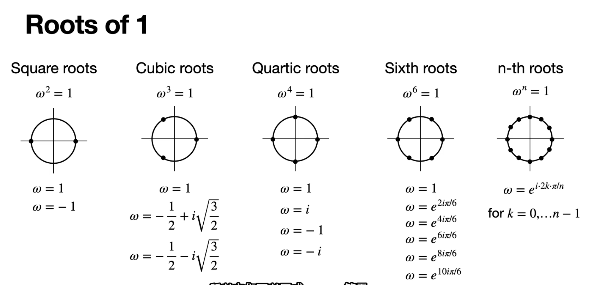
- \(\omega = 120°\) 是角，也是复数表示，也是 指数
- 复数： \(\omega = -\frac{1}{2} + i \sqrt{\frac{3}{2}}\)
- ※ 指数：\(\omega = e^{i\frac{2\pi k}{N}}\) 这里划分成 3 个，也就是 3 个样本点，所以 \(N=3\)，这是第一次旋转，所以，\(k=1\) 所以指数表示 \(\omega = e^{i \frac{2 \pi}{3}}\)
复指数的周期性¶
\(e^{ix}\) 周期 \(T=2\pi\)
复指数的一般形式 \(e^{i\Omega t}\) 周期 \(T=\frac{2\pi}{\Omega}\)
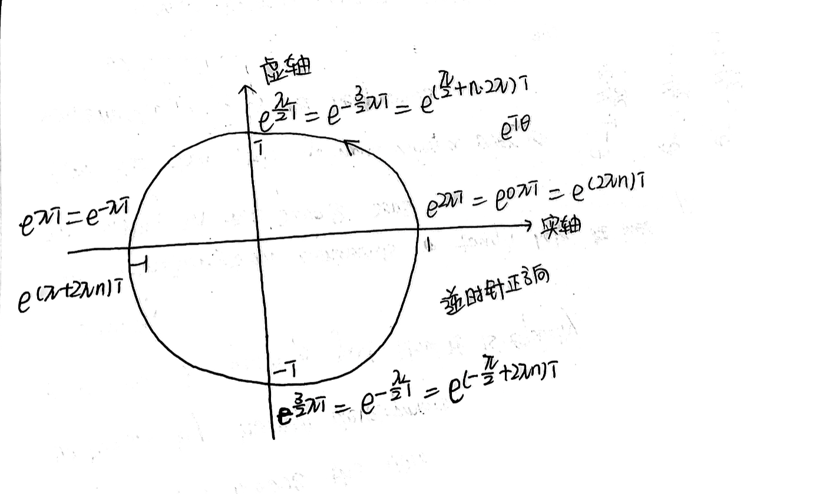
-
这里的 \(n= \pm 1、\pm 2、\pm 3,......\)
-
\(e^{i}\) 指数部分 \(＞0\) ：表示逆时针旋转，是正方向。
- \(e^{ix} \& e^{-ix}\) ：实部不变，虚部互为相反数
解释：
- \(e^{ix} = \cos x + i \sin x\)
- \(e^{-ix} = \cos x - i \sin x\)
- \(T=N、T=\frac{N}{2}、T=\frac{N}{3}、T=\frac{N}{4}\) ？跟 \(\omega 、T\) ？
- 这里的 \(N\) 表示原始时间序列的长度
- \(\omega = 2\pi f = \frac{2 \pi}{T}\)
把记号区分一下就好。
\(\Omega = \frac{2\pi}{N}\) 所以 这个叫基波的角频率，\(T=N\) 后面依次，\(N/2、N/3、......\)
这里变化的是 \(k\)，想要讨论的是基波、谐波
\(\Omega = \frac{2\pi}{N}\) → \(T=N\)
\(2\Omega = \frac{2\pi}{N/2}\) → \(T=N/2\)
\(3\Omega = \frac{2\pi}{N/3}\) → \(T=N/3\)
\(4\Omega = \frac{2\pi}{N/4}\) → \(T=N/4\)
(1)\(X_k = \sum_{n=0}^{N-1} x_n e^{-i\frac{2 \pi k n}{N}}\)
(2) \(\quad = \sum_{n=0}^{N-1} x_n e^{-i \Omega kn}\)
(3)\(X_k = w^{kn}x_n\) ，\(kn=0 \sim N-1\)
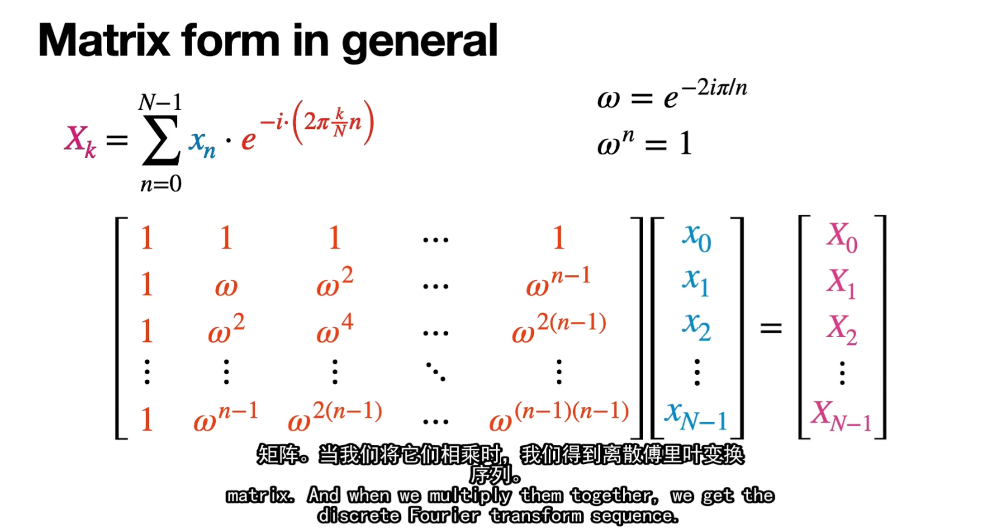
- 关于这里的周期性特别的强调一下，尤其是和三角函数的形式作对比：
最大周期 与 正交基
- 对于任意周期 \(T\) 的含义进行傅里叶变换，用到的正交基，在一个周期内、也就是最大周期内的积分\(=0\) ，这句话适用于三角函数正交基，也适用于复指数正交基→复指数正交基的证明
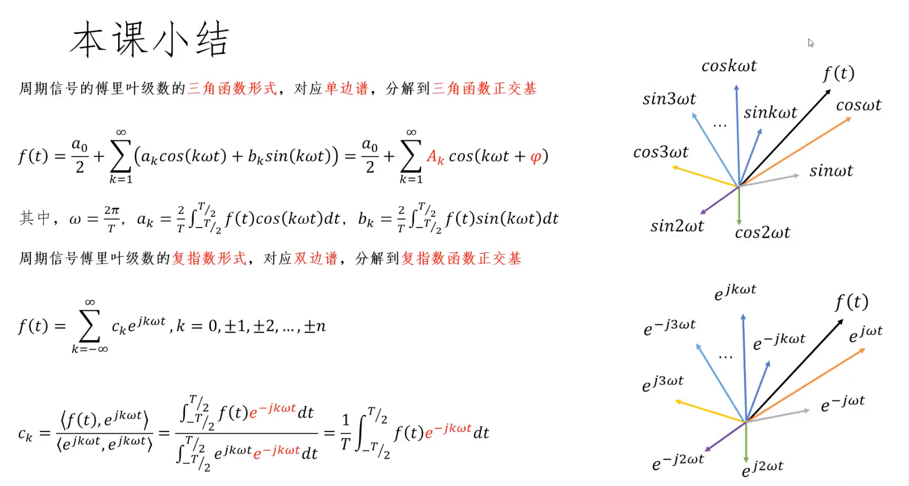
周期为什么是 \(2\pi\)¶
🌺 它是基本正弦函数 \(\sin(x)\) 的一个完整周期
🌺 它是所有 \(\sin(nx)\) 函数的周期公倍数
🌺 它构成了一个完整的正交系统
解释周期公倍数：
对于任意正整数 \(n\)，\(\sin(nx)\) 的周期是 \(\frac{2\pi}{n}\)。当我们取 \([0,2\pi]\) 作为积分区间时：
- \(\sin(1x)\) 在此区间完成 1 个完整周期
- \(\sin(2x)\) 在此区间完成 2 个完整周期
- \(\sin(3x)\) 在此区间完成 3 个完整周期
这意味着，对于任何整数 \(n\)，\(\sin(nx)\) 在 \([0,2\pi]\) 区间内包含整数个完整周期。
对于 \(sin(nx)\) 来说， \(2\pi\) 是基本的最大周期。
- 正交性的数学原理
当我们计算积分 \(\int_0^{2\pi} \sin(nx)\sin(mx) dx\) 时，我们可以使用三角恒等式：
所以积分变为：
对于任何非零整数 \(k\)，\(\int_0^{2\pi} \cos(kx) dx = 0\)（因为余弦函数在完整周期上的积分为零）。
当 \(n \neq m\) 时，\((n-m)\) 和 \((n+m)\) 都是非零整数，所以两项积分都等于零，最终结果是零。
- 函数空间的完备性
\([0,2\pi]\) 区间上的三角函数系统 \(\{1, \sin(x), \sin(2x), ..., \cos(x), \cos(2x), ...\}\) 构成了平方可积函数空间的一个完备正交基。这意味着任何在此区间上的平方可积函数都可以表示为这些基函数的线性组合。
- 实际例子说明
让我们通过一个具体例子来理解：考虑 \(\sin(2x)\) 和 \(\sin(3x)\)。
- \(\sin(2x)\) 的周期是 \(\pi\)
- \(\sin(3x)\) 的周期是 \(\frac{2\pi}{3}\)
如果我们只在一个函数的周期上积分，比如 \([0,\pi]\)，另一个函数在此区间不会完成整数个周期，正交性可能不成立。但在 \([0,2\pi]\) 上：
- \(\sin(2x)\) 完成了 2 个完整周期
- \(\sin(3x)\) 完成了 3 个完整周期
这种情况下，两个函数的乘积在正负区域"恰好平衡"，使积分为零。
- 总结
\([0,2\pi]\) 积分区间的选择不是基于单个函数的周期，而是基于建立一个完整正交系统的需要。这个特殊区间确保了:
- 所有 \(\sin(nx)\) 函数在此区间上包含整数个周期
- 不同频率的正弦函数在此区间上正交
- 三角函数系统在此区间上构成完备正交基
\(\Omega 、\omega\) 与周期 \(T\)¶
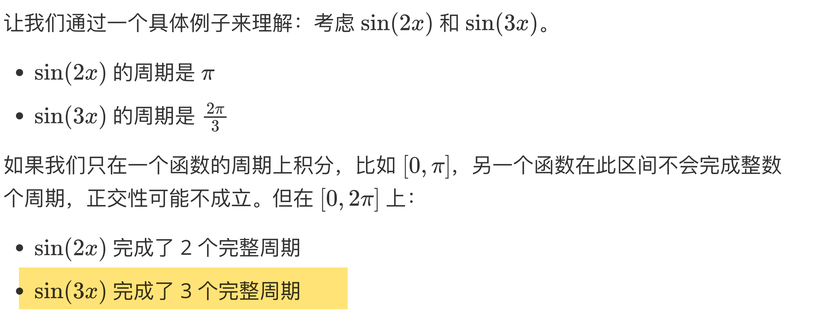
这句话，
你仔细观察这里：
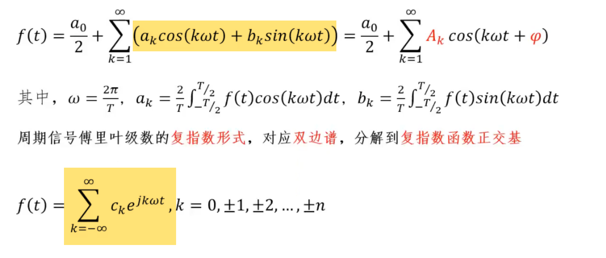
正交基分别是 （k 取 1,2,3,...）
⭐︎ \(\{0,\cos\omega t,\sin\omega t,\cos2\omega t,\sin2\omega t,\cos3\omega t,\sin3\omega t,..\}\)
分别完成，直流分量，1个周期，2 个周期，3 个周期
(k 取 0,1,2,3,...) 对于复指数来说 直流分量和复指数合并了，所以 k 从 0 开始取
⭐︎ \(\{e^{0jk\omega t},e^{\pm j\omega t},e^{\pm 2 j\omega t},e^{\pm 3 j\omega t},... \}\)
分别完成，直流分量，1 个周期，2 个周期，3 个周期，4 个周期，......
（以 原始信号长度为基准，完成1 个周期，2 个周期，... ...）
提示一点，如果把复指数记成，\(\{e^{0j\Omega t},e^{\pm j\Omega t},e^{\pm 2 j\Omega t},e^{\pm 3 j\Omega t},... \}\)
（这里是我看得很顺畅的的表示）
那么，离散傅里叶变换就可以记成 \(X[k] = \sum_{n=0}^{\infty} x[n]w_{kn}\)
其中 \(w=e^{-i\frac{2\pi}{N}}\) 基波对应的频率、基频波。与之对应的是谐波。
再把 \(\Omega \stackrel{记作}{=} \frac{2\pi}{N}\)
正交基可以写成 \(\{e^{0j\Omega t},e^{\pm j\Omega t},e^{\pm 2 j\Omega t},e^{\pm 3 j\Omega t},... \}\)
都用 \(\omega\) 表示：\(\{\omega^{0t},\omega^{1t},\omega^{2t},\omega^{3t},\omega^{4t}..\}\)
于是，就有了 DFT 的矩阵形式：
复指数正交基¶
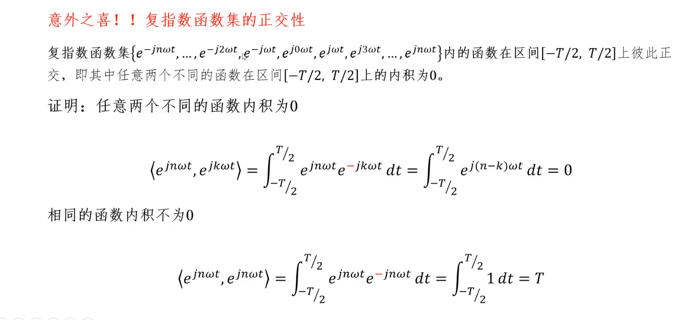
特别想强调的是，为什么两个不同函数内积=0
借助最大周期来理解，这里的 T 是最大周期，一个周期内的积分\(=0\)，所以\(=0\)
怎么理解这里的最大周期？
\(e^{j(n-k)\omega t}\) 的周期 ：
$ e^{j(n-k)\omega t} 的 周期 =\frac{2 \pi}{(n-k)\omega}$
其中，这里的傅里叶变换中： \(\omega = \frac{2 \pi}{N}\) \(N\)表示原始序列长度，这里将原始序列长度记为 \(T\) ，所以 \(\omega = \frac{2 \pi}{T}\)
所以 \(e^{j(n-k)\omega t} 的 周期 = \frac{N}{n-k} =\frac{T}{n-k}\)
也就是说
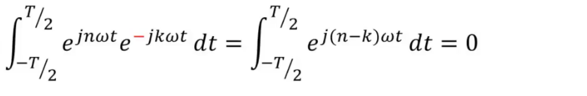
这里积分内 复指数的 \(周期 =\frac{T}{n-k}\)
也就是说，在 \(t \in (-\frac{T}{2},\frac{T}{2})\) 中，\(e^{j(n-k)\omega t}\) 完成了 \(n-k\) 次周期
也就是说 \(T\) 是所有 \(e^{j(n-k)\omega t}\) 的最大周期，所以周期内积分 \(= 0\)
对照着 三角函数正交基：
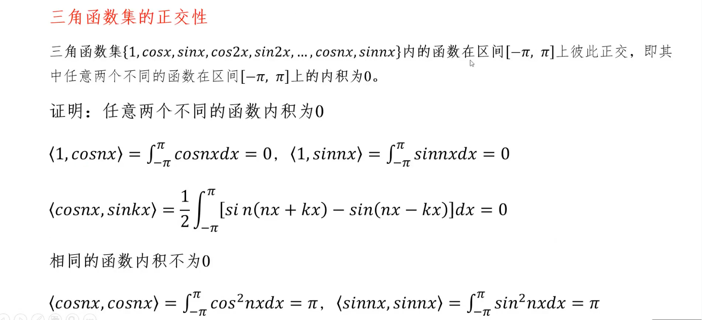
⭐︎ 复数、复指数、三角函数的相互对应¶
\(a+bi\)
= \(\sqrt{a^2 + b^2} e^{i {arctan\frac{b}{a}}} = |模长|e^{i 幅角}\)
= \(\sqrt{a^2 + b^2}(\cos {(\arctan\frac{b}{a})}+ i \sin {(\arctan\frac{b}{a})} )\)
\(=|模长|(\cos幅角+ \sin幅角)\)
$\cos {(\arctan\frac{b}{a})} = \frac{a}{\sqrt{a^2 + b^2}} $
\(余弦值 = \frac{实部}{|模长|}\)
\(\sin {(\arctan\frac{b}{a})} = \frac{b}{\sqrt{a^2 + b^2}}\)
\(正弦值 = \frac{虚部}{|模长|}\)
\(幅角 = \arctan \frac{虚部}{实部}\)
图形：
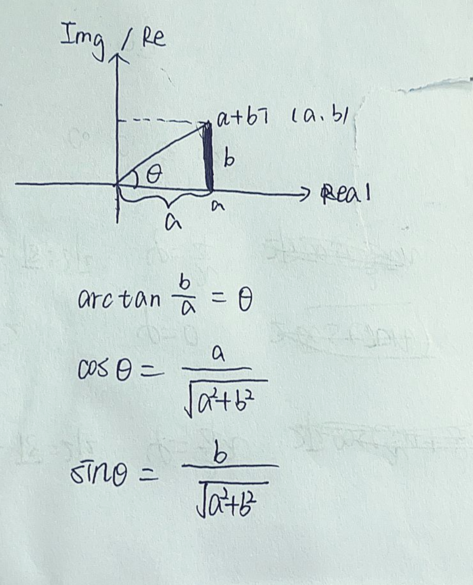
这里有一个遗留问题：怎么用单个余弦函数表示或者单个正弦函数表示
借助的知识：由这里，双边谱和单边谱的关系
- 双边谱就是借助欧拉公式，将傅里叶级数余弦函数表示的辅助角形式转换为 \(e\) 的复指数形式
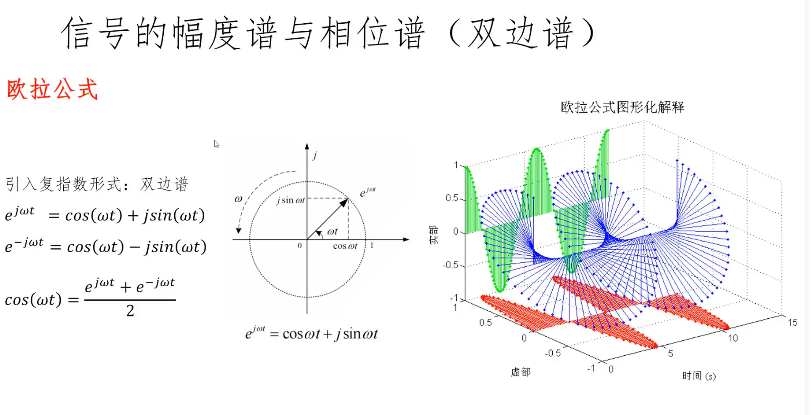
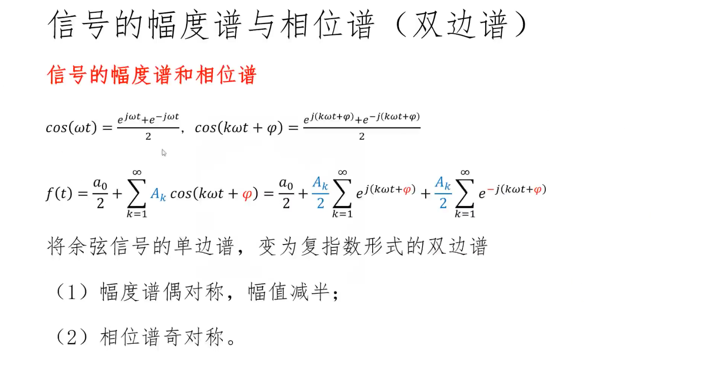
- 将余弦信号表示单边谱变成复指数形式表示双边谱
- 区别&联系（双边谱&单边谱，模长和相角的方向和大小都要讨论到）
- 双边谱的 幅值，由 单边谱的幅值 减半，对称到负频率上
- 相位大小不变，频率进行奇对称
举例子：
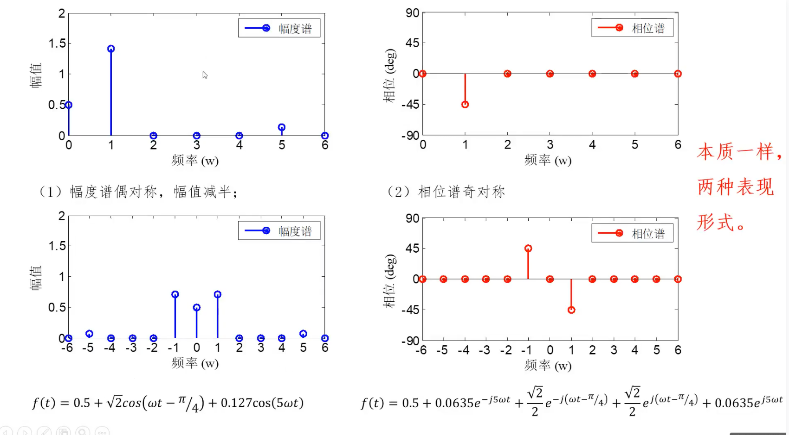
由三角函数出发，可以很容易的写出 复指数形式。
并由三角函数的单边谱画出双边谱。
但实际上，用 DFT（离散傅里叶变换），DFS（离散傅里叶级数）用复指数分解更容易计算，因为有矩阵形式。\(X[k]=w^{kn}x[n]\) ；那 怎么由复指数形式（双边谱）直接写出三角函数的形式（单边谱），注意，不是中间的辅助角形式？
由这里例题：
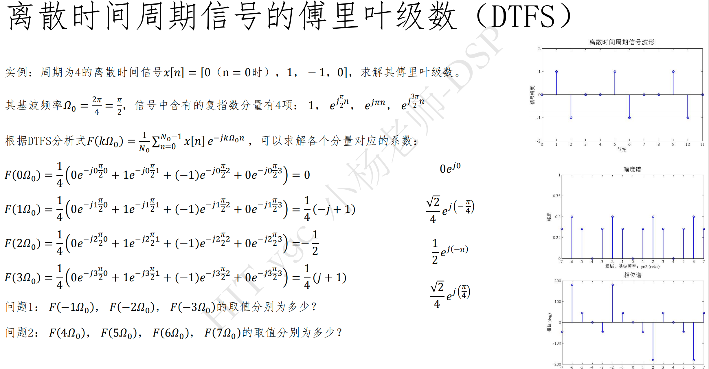
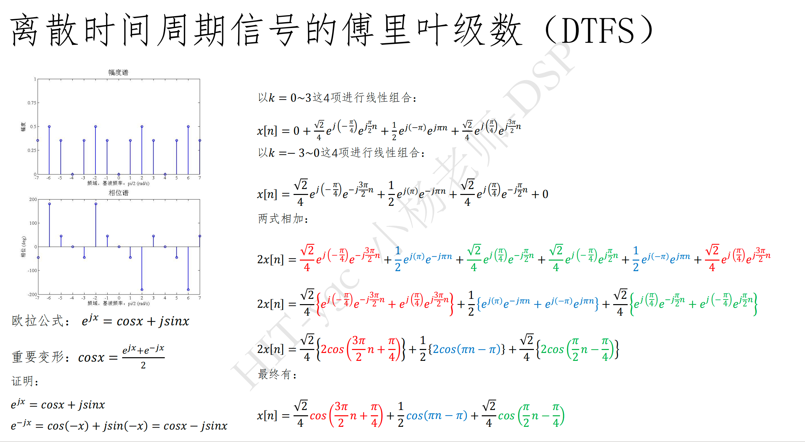
由这个例题的处理，可以看出是 取得两个的周期，进行共轭。
也就是 用的 共轭性质、欧拉公式、周期性 ， 其实，还有一个奇偶性，用了奇偶性可以看出双边谱和单边谱
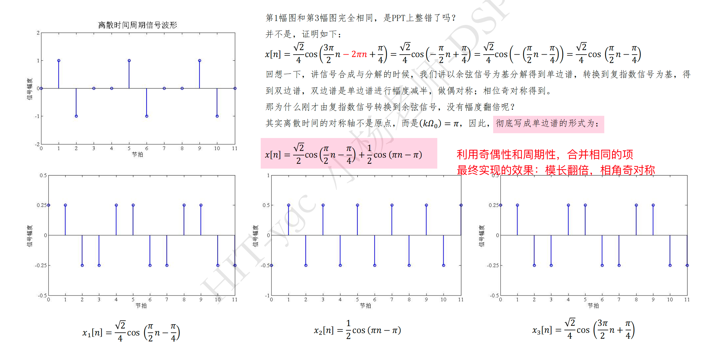
我现在的问题：能不能由
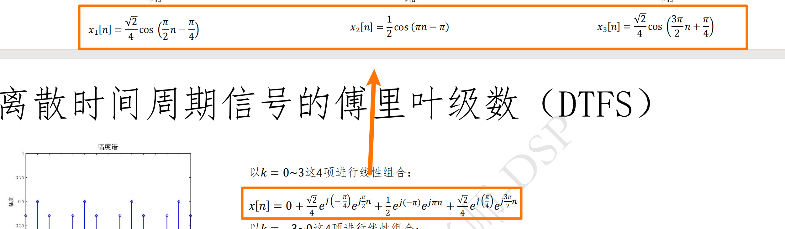
复指数形式直接写出三角函数形式；能不能由双边谱直接写出单边谱？
这个题的特殊之处：

-
一般有了 $e^{ix} $ 直接对指数部分 取负数，得到 \(e^{-ix}\) ，再相加即可得到单边谱
-
但是问题是 如果 \(x[n] = e^{ix}\) 那随便取 \(e^{-ix}\) 就不一定有意义了，不一定是 \(x[n]\) 了。这个题是可以。（后面再看